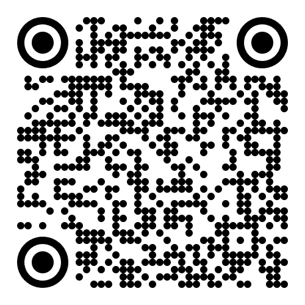

使用前請務必閱讀以下注意事項：
為輕量化系統成本，本測試中的系統現為無加密訊息傳送系統， 任何知道10位數安全密碼的使用者皆可監聽，請妥善規劃安全密碼， 使用者亦不得輸入、傳送或顯示依法應受特別保護之機敏資訊、個人資料、 帳號密碼、國家機密或其他不宜公開之資訊，本系統僅提供測試使用， 不連代負責使用後衍伸的責任。
請設定本次連線安全金鑰，勿使用過度簡單之密碼。(如：0000000000、12345678910)

此操作將立即清除目前所有長官顯示端的提示畫面。
清空後，長官螢幕將回到「等待訊息輸入...」狀態，並同步清除 MQTT Broker 上目前保留的最新提示。
此操作將記錄於「傳送訊息歷史紀錄」，以利日後查閱。
開發目的：本系統為作者宗恆個人運用 AI 工具自行開發維運，目的是減少長官備詢中幕僚紙本遞送提示時的不佳觀感，亦可跨排數座位進行提示。
資安與風險提醒：本系統未經過完整資安與系統開發規劃，使用者須自行承擔資訊安全及相關運作風險；開發者不承擔任何因使用本系統所致之損害或法律責任。
開源與部署須知：本系統無版權限制，歡迎自由下載使用。請下載後另建伺服器空間部署，請勿直接使用開發者之 GitHub 環境，以避免資料混淆與資源衝突。